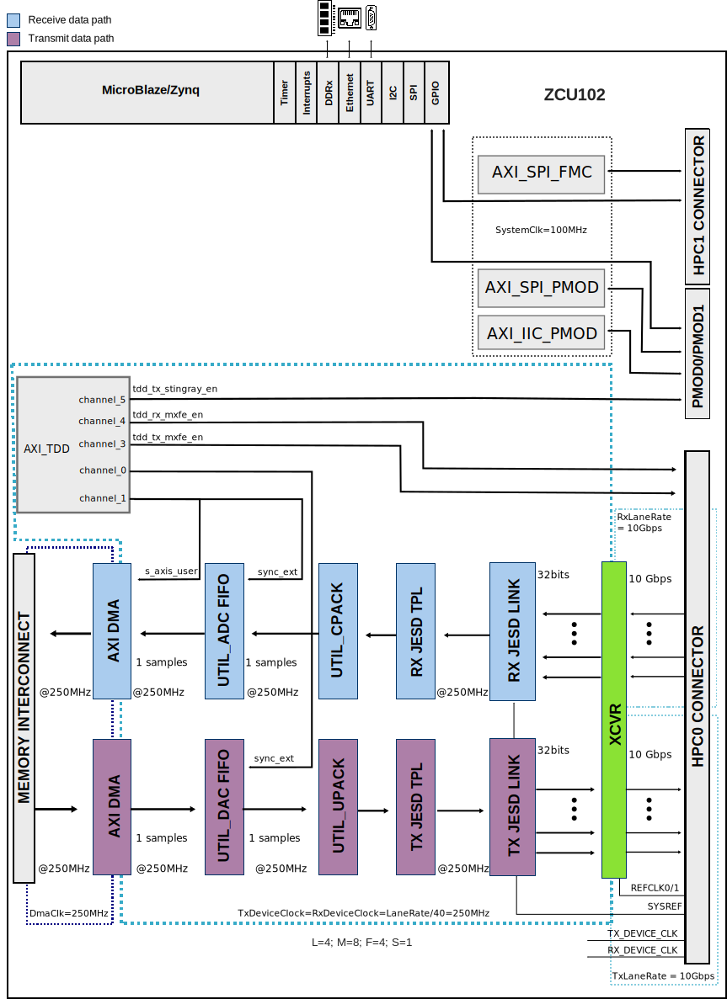

X-Band Platform HDL project
Warning
This project extends the AD9081-FMCA-EBZ project. This documentation focuses on the specific extensions made for this system.
For a more detailed description of the configuration parameters and system capabilities, check the AD9081/AD9082/AD9986/AD9988 HDL project page.
Overview
The X-Band Development Platform contains one MxFE® software defined, direct RF sampling transceivers, X-Band to C-Band Up/Down Converter, and a X/Ku Band analog phased array proto-typing platform. The target application is phased array radars, electronic warfare, and ground-based SATCOM, specifically a X Band 32 transmit/32 receive channel hybrid beamforming phased array radar.
The X-Band Development Platform highlights a complete system solution. It is intended as a testbed for demonstrating hybrid beamforming phased array radar as well as the implementation of system level calibrations, beamforming algorithms, and other signal processing algorithms. The system is designed to mate with a ZCU102 Evaluation Board from Xilinx®, which features the Zynq® UltraScale+™ MPSoC FPGA, with provided reference software, HDL code, and MATLAB system-level interfacing software.
Supported boards
Supported devices
Supported carriers
Evaluation board |
Carrier |
FMC slot |
|---|---|---|
FMC HPC0 + FMC HPC1 + PM0D0 + PMOD1 |
Block design
Block diagram
Example block design for Single link; M=8; L=4
{kind=link}
The Rx links (ADC Path) operate with the following parameters:
- Rx Deframer parameters: L=4, M=8, F=4, S=1, NP=16, N=16 (Quick
Config 0x0A)
Sample Rate: 250 MSPS
Dual link: No
RX_DEVICE_CLK: 250 MHz (Lane Rate/40)
REF_CLK: 500MHz (Lane Rate/20)
JESD204B Lane Rate: 10Gbps
QPLL0 or CPLL
The Tx links (DAC Path) operate with the following parameters:
- Tx Framer parameters: L=4, M=8, F=4, S=1, NP=16, N=16 (Quick Config
0x09)
Sample Rate: 250 MSPS
Dual link: No
TX_DEVICE_CLK: 250 MHz (Lane Rate/40)
REF_CLK: 500MHz (Lane Rate/20)
JESD204B Lane Rate: 10Gbps
QPLL0 or CPLL
Configuration modes
The following are the parameters of this project that can be configured:
JESD_MODE: used link layer encoder mode
- 64B66B - 64b66b link layer defined in JESD204C, uses AMD IP as Physical
Layer
- 8B10B - 8b10b link layer defined in JESD204B, uses ADI IP as Physical
Layer
RX_LANE_RATE: lane rate of the Rx link (MxFE to FPGA)
TX_LANE_RATE: lane rate of the Tx link (FPGA to MxFE)
[RX/TX]_JESD_M: number of converters per link
[RX/TX]_JESD_L: number of lanes per link
[RX/TX]_JESD_S: number of samples per frame
[RX/TX]_JESD_NP: number of bits per sample
[RX/TX]_NUM_LINKS: number of links
- TDD_SUPPORT: set to 1, adds the TDD; enables external synchronization through
TDD. Must be set to 1 when SHARED_DEVCLK=1
SHARED_DEVCLK
TDD_CHANNEL_CNT
TDD_SYNC_WIDTH
TDD_SYNC_INT
TDD_SYNC_EXT
- TDD_SYNC_EXT_CDC: if enabled, the CDC circuitry for the external sync signal
is added
- [RX/TX]_KS_PER_CHANNEL: Number of samples stored in internal buffers in
kilosamples per converter (M)
- Check out this guide on more details regarding these parameters:
CPU/Memory interconnects addresses
The addresses are dependent on the architecture of the FPGA, having an offset added to the base address from HDL (see more at CPU/Memory interconnects addresses).
Instance |
ZynqMP |
|---|---|
rx_mxfe_tpl_core |
0x84A1_0000 |
axi_mxfe_rx_xcvr |
0x84A6_0000 |
axi_mxfe_rx_jesd |
0x84A9_0000 |
tx_mxfe_tpl_core |
0x84B1_0000 |
axi_mxfe_tx_xcvr |
0x84B6_0000 |
axi_mxfe_tx_jesd |
0x84B9_0000 |
axi_iic_pmod |
0x8510_0000 |
axi_spi_pmod |
0x8520_0000 |
axi_spi_fmc |
0x8530_0000 |
axi_mxfe_rx_dma |
0x9C42_0000 |
axi_mxfe_tx_dma |
0x9C43_0000 |
mxfe_tx_data_offload |
0x9C44_0000 |
mxfe_rx_data_offload |
0x9C45_0000 |
axi_tdd_0 |
0x9C46_0000 |
I2C connections
I2C type |
I2C manager instance |
Alias |
Address |
Device Address |
I2C subordinate |
|---|---|---|---|---|---|
PL |
axi_iic |
axi_i2c_pmod |
0x8510_0000 |
0x6A |
LTC2992 |
SPI connections
SPI type |
SPI manager instance |
SPI subordinate |
CS |
|---|---|---|---|
PS |
spi0 |
AD9081 |
0 |
PS |
spi1 |
HMC7044 |
0 |
PL |
axi_spi_pmod |
ADAR1000_CSB_1 |
1 |
PL |
axi_spi_pmod |
ADAR1000_CSB_2 |
2 |
PL |
axi_spi_pmod |
ADAR1000_CSB_3 |
3 |
PL |
axi_spi_pmod |
ADAR1000_CSB_4 |
4 |
PL |
axi_spi_pmod |
LTC2314 |
5 |
PL |
axi_spi_fmc |
ADF4371 |
6 |
GPIOs
GPIO signal |
Direction (from FPGA view) |
HDL GPIO EMIO |
Software GPIO Zynq MP |
|---|---|---|---|
gpio_o_86_ms |
OUT |
86 |
163 |
gpio_o_85_ms |
OUT |
85 |
162 |
pmod0_6_6_RX_LOAD |
OUT |
84 |
161 |
pmod0_5_4_TX_LOAD |
OUT |
83 |
160 |
pmod0_0_1_PA_ON |
OUT |
81 |
159 |
gpio_o_78_ms |
OUT |
78 |
155 |
fmc_bob_xud1_imu_rst |
OUT |
77 |
154 |
tdd_sync |
IN |
76 |
153 |
fmc_bob_xud1_imu_gpio2 |
INOUT |
75 |
152 |
fmc_bob_xud1_imu_gpio1 |
INOUT |
74 |
151 |
fmc_bob_xud1_imu_gpio0 |
INOUT |
73 |
150 |
fmc_bob_xud1_gpio5 |
INOUT |
72 |
149 |
fmc_bob_xud1_gpio4 |
INOUT |
71 |
148 |
fmc_bob_xud1_gpio3 |
INOUT |
70 |
147 |
fmc_bob_xud1_gpio2 |
INOUT |
69 |
146 |
fmc_bob_xud1_gpio1 |
INOUT |
68 |
145 |
fmc_bob_xud1_gpio0 |
INOUT |
67 |
144 |
fpga_syncout_1_n |
INOUT |
63 |
141 |
fpga_syncout_1_p |
INOUT |
62 |
140 |
fpga_syncin_1_n |
INOUT |
61 |
139 |
fpga_syncin_1_p |
INOUT |
60 |
138 |
txen[1:0] |
OUT |
59:58 |
137:136 |
rxen[1:0] |
OUT |
57:56 |
135:134 |
rstb |
OUT |
55 |
133 |
hmc_sync |
OUT |
54 |
132 |
irqb[1:0] |
IN |
53:52 |
131:130 |
agc3[1:0] |
IN |
51:50 |
129:128 |
agc2[1:0] |
IN |
49:48 |
127:126 |
agc1[1:0] |
IN |
47:46 |
125:124 |
agc0[1:0] |
IN |
45:44 |
123:122 |
hmc_gpio1 |
INOUT |
43 |
121 |
gpio[10:0] |
INOUT |
42:32 |
120:110 |
Interrupts
Below are the Programmable Logic interrupts used in this project.
Instance name |
HDL |
Linux ZynqMP |
Actual ZynqMP |
|---|---|---|---|
axi_spi_pmod |
15 |
111 |
143 |
axi_iic_pmod |
14 |
110 |
142 |
axi_mxfe_rx_dma |
13 |
109 |
141 |
axi_mxfe_tx_dma |
12 |
108 |
140 |
axi_mxfe_rx_jesd |
11 |
107 |
139 |
axi_mxfe_tx_jesd |
10 |
106 |
138 |
axi_spi_fmc |
9 |
105 |
137 |
Building the HDL project
The design is built upon ADI’s generic HDL reference design framework. ADI distributes the bit/elf files of these projects as part of the ADI Kuiper Linux. If you want to build the sources, ADI makes them available on the HDL repository. To get the source you must clone the HDL repository.
Linux/Cygwin/WSL
~$
cd hdl/projects/ad9081_fmca_ebz_x_band/zcu102
~/hdl/projects/ad9081_fmca_ebz_x_band/zcu102$
make
A more comprehensive build guide can be found in the Build an HDL project user guide.
Warning
All the details regarding the build parameters can be found on the AD9081/AD9082/AD9986/AD9988 HDL project page
Software considerations
When trying to capture a large amount of data make sure to increase the max_block_size by using the steps described on the IIO System Considerations Tips & Tricks page.
Resources
More information
Support
Analog Devices, Inc. will provide limited online support for anyone using the reference design with ADI components via the EngineerZone FPGA reference designs forum.
For questions regarding the ADI Linux device drivers, device trees, etc. from our Linux GitHub repository, the team will offer support on the EngineerZone Linux software drivers forum.
For questions concerning the ADI No-OS drivers, from our No-OS GitHub repository, the team will offer support on the EngineerZone microcontroller No-OS drivers forum.
It should be noted, that the older the tools’ versions and release branches are, the lower the chances to receive support from ADI engineers.